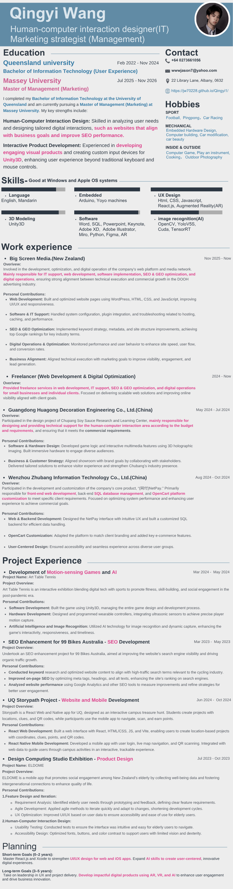

Qingyi Wang — CV
Human–computer interaction designer and marketing strategist. Experience in web development, digital optimization, and interactive product design.

Education
University of Queensland
Bachelor of Information Technology (User Experience)
February 2022 – November 2024
Massey University
Master of Management (Marketing)
July 2025 – November 2026
Skills
- UX design, user research, prototyping, and usability testing
- HTML, CSS, JavaScript, React.js, and augmented reality
- Unity3D, Arduino, embedded hardware, and custom input devices
- Figma, Adobe XD, Adobe Illustrator, Miro, and Python
- Image recognition: OpenCV, YOLOv5, CUDA, and TensorRT
- Languages: English and Mandarin
Work experience
Big Screen Media · New Zealand
November 2025 – present
Web development, IT support, software implementation, SEO and GEO optimization, and digital operations for the company's web platform and media network.
Freelancer · Web Development & Digital Optimization
2024 – present
Web development, IT support, SEO and GEO optimization, and digital operations for small businesses and individual clients.
Guangdong Huagong Decoration Engineering Co., Ltd. · China
May 2024 – July 2024
Human–computer interaction design and technical support for the Chubang Soy Sauce Research and Learning Center, including game logic and multimedia interactions.
Wenzhou Zhubang Information Technology Co., Ltd. · China
August 2024 – October 2024
Front-end web development, SQL database management, and OpenCart customization for the NetPay platform.
Project experience
Art Table Tennis
March 2024 – May 2024
Unity3D game development, wearable controllers, motion sensing, and image recognition for an interactive exhibition.
99 Bikes Australia · SEO Enhancement
March 2023 – May 2023
Keyword research, on-page SEO, content optimization, and website performance analysis.
UQ Storypath · Website and Mobile Development
June 2024 – October 2024
React web and React Native mobile development for an interactive campus treasure hunt with location-based projects and QR scanning.
ELDOME · Product Design
July 2023 – October 2023
Research, prototyping, agile iteration, usability testing, and accessible interface design for an app supporting elderly social engagement in New Zealand.